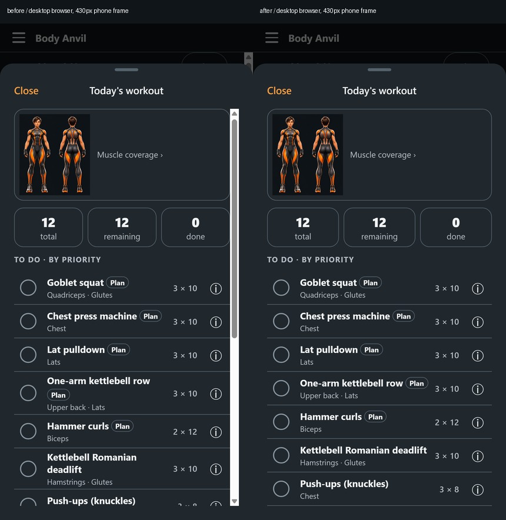
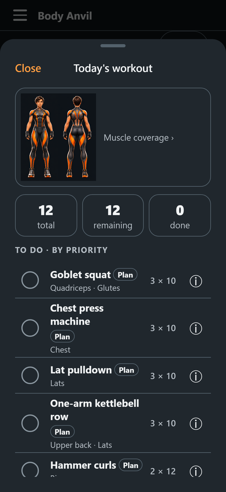
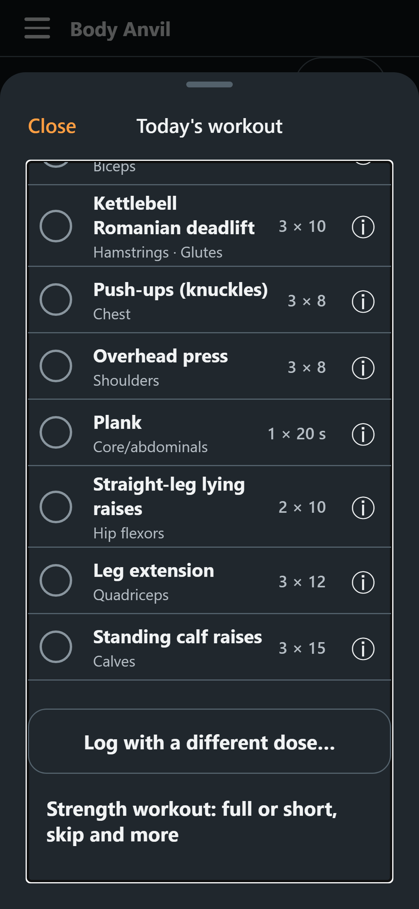
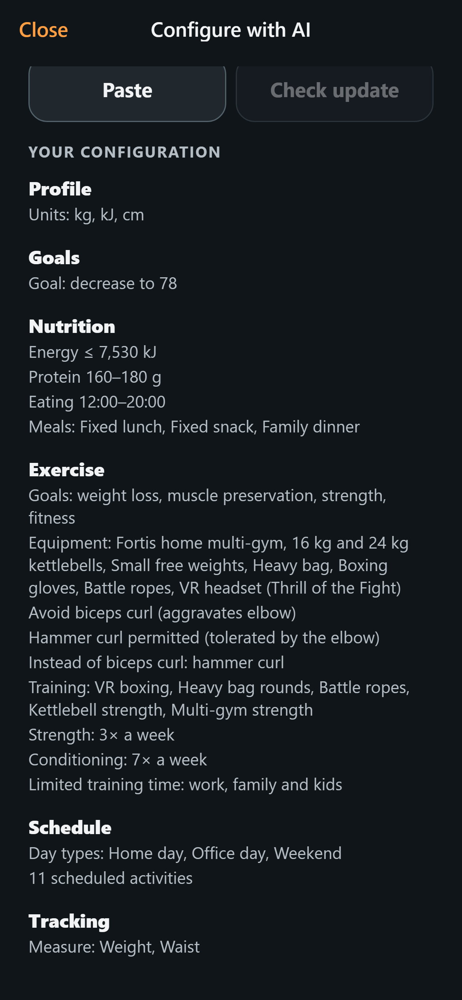
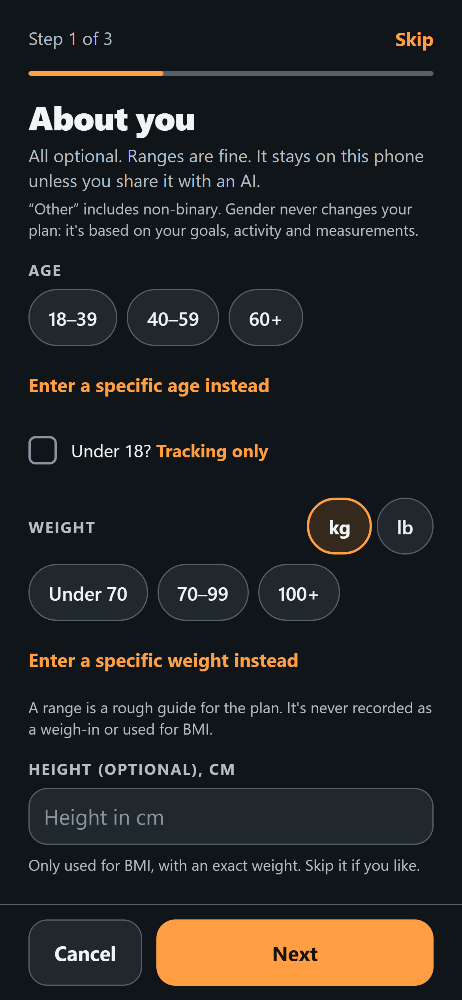
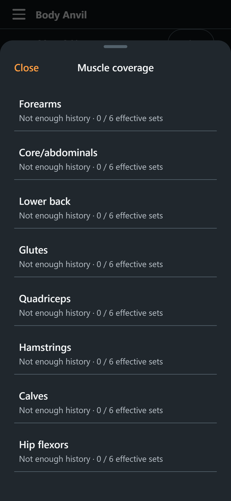
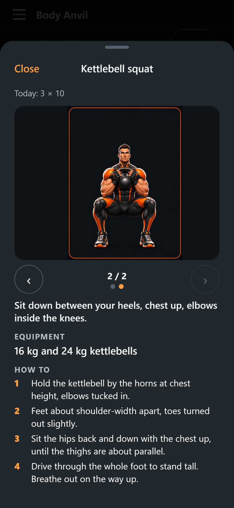
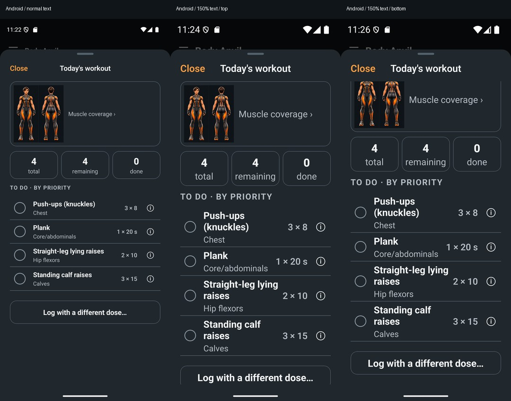

No visible scrollbars
One shared native scroll policy and one root browser rule. Scrolling, content, headers and actions remain operational.
Actual desktop browser before and after
The reference uses unchanged develop. Playwright's default scrollbar-hiding flag is explicitly disabled in both captures.

All content remains reachable

360 px: natural partial next row
360 px: final actions remain reachable, Close stays fixedOther routes and sheets




Installed Android APK
Pixel 9 emulator, API 35. Normal text, then 150% text before and after a real touch swipe. The final action stays reachable and Close stays fixed. No Metro connection.

Full surface audit, implementation and verification